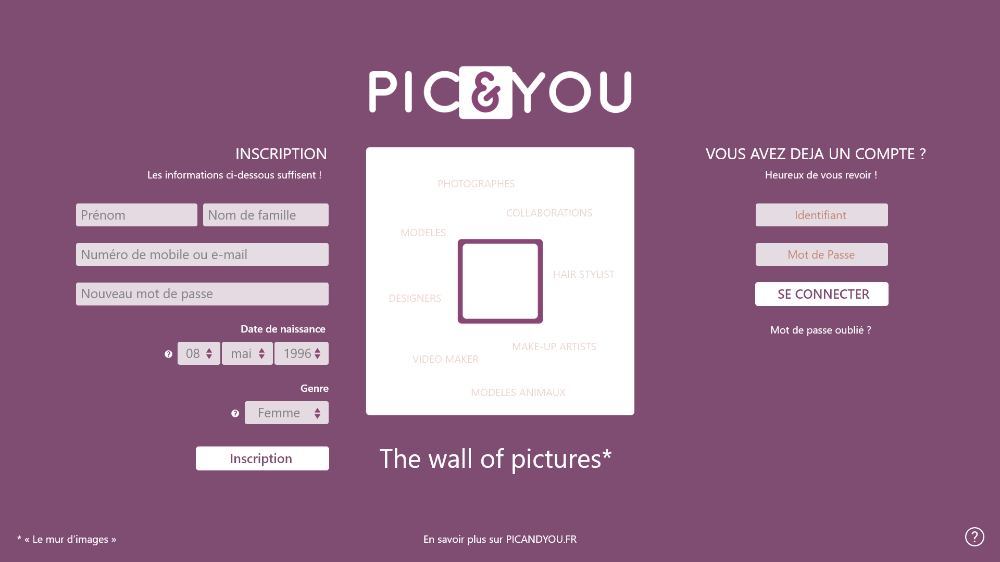
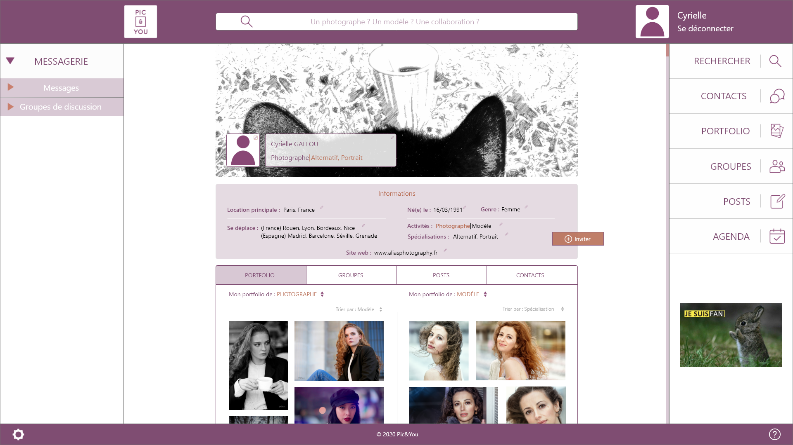

Après avoir cliqué sur les trois flèches du bas, vous atterissez sur la page d'inscription / connexion. Vous pouvez entrer vos informations pour vous inscrire, ou bien vous connecter avec votre identifiant et mot de passe. En cas d'oubli du mot de passe, il faudra suivre la procédure indiquée dans "Mot de passe oublié ?"
Vous voici sur la Home.
Votre messagerie se trouve sur la gauche, divisée en 2 sections : les messages individuels, et les messages de groupe. Votre fil d'actualité se trouve au centre, et une barre de recherche est disponible dans le header.
Votre profil est accessible en haut à droite, lorsque vous cliquez sur votre prénom situé à droite de votre photo de profil. Juste en-dessous, un bouton permet de vous déconnecter.
La partie droite de la plateforme permet d'accéder aux fonctionnalités mères de la communauté : un moteur de recherche puissant, avec de nombreux filtres disponibles, votre répertoire de contacts, votre portfolio, vos groupes de travail, vos posts et votre agenda. Quelques publicités pourront être visibles au début du lancement de l'application, mais sont vouées à disparaître.
Visitons maintenant le profil.
Vos informations principales (location, déplacements, date de naissance, genre, activités, spécialisations, site web) sont visibles sous votre photo de couverture, dans un espace dédié. La modification de ces informations se fait en cliquant sur le stylo présent à droite de chacune d'entre elles.
Sous cet espace, quatre onglets permettent à vos contacts de mieux vous connaître : votre portfolio, vos groupes de travail, vos posts, vos contacts. Vous pouvez choisir la visibilité de chacun de ces onglets (public, amis, privé). Pour modifier ces onglets, rendez-vous sur la barre de navigation tout à droite de la plateforme.
Les boutons Paramètres et Aide sont présents dans le footer, en bas de page, respectivement à gauche et à droite.
De nouvelles fonctionnalités seront bien évidemment déployées au fur et à mesure de votre utilisation de l'application.
Alors, qu'en pensez-vous ?
Si vous souhaitez nous donner votre avis, ou nous laisser un message, c'est ici ! 📧
Votre avis peut nous apporter beaucoup sur la conception du design de l'application. Nous souhaitons que Pic&You soit votre plateforme de collaborations, à votre image.
Si vous souhaitez soutenir la mise en production de l'application, rendez-vous sur cette page 🧡